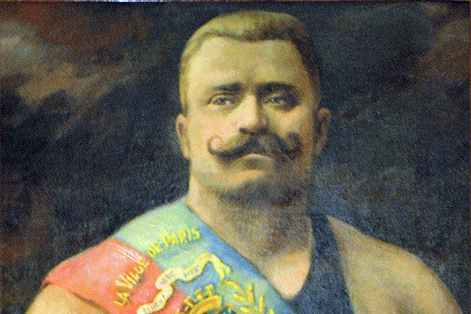
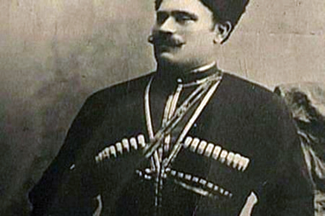
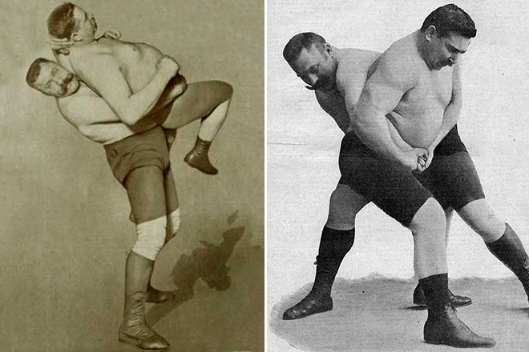
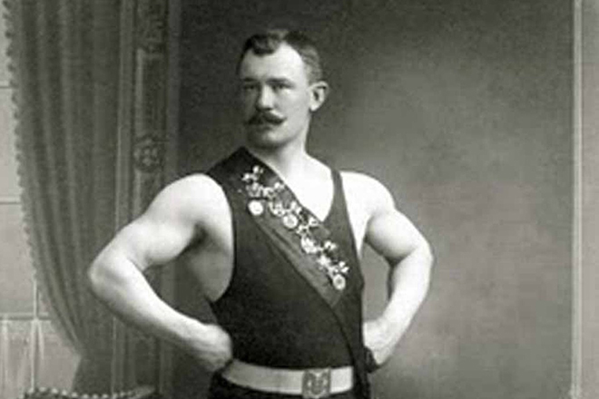
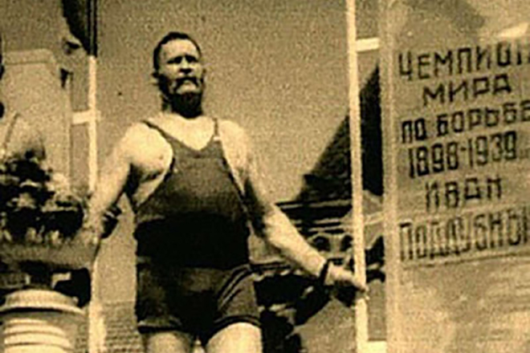
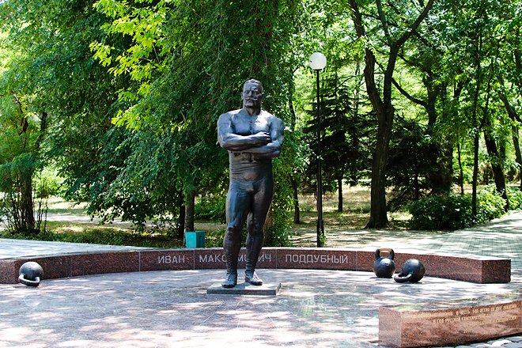
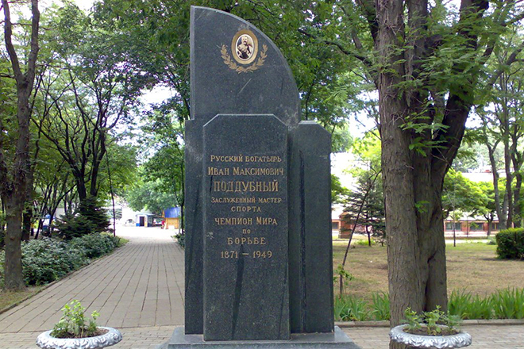

Иван Поддубный – профессиональный борец, атлет и артист цирка. Человек-легенда, выступления которого собирали аншлаги в России, Франции, Италии, Германии и Америке. Иван Максимович Поддубный родился 26 сентября (по старому стилю) 1871 года в селе Богодуховка Полтавской губернии.

Свою недюжинную физическую силу Иван унаследовал от отца, потомка запорожских казаков. Будущий силач с детства был приучен к нелегкому крестьянскому труду, с 12 лет батрачил. У матери Ивана был красивый голос. Тонкий музыкальный слух передался и сыну. По воскресеньям богатырь Поддубный пел в церковном хоре.

В 22 года парень уехал из родного села в Крым, на этот шаг Ивана толкнула любовь. Алена, девушка, которую любил Иван, росла в зажиточной семье, поэтому ее отец выступил категорически против брака с бедняком Поддубным. Иван мечтал заработать много денег, разбогатеть и вернуться к девушке, но вскоре после отъезда молодой человек о ней забыл. 3 года будущий спортсмен работал грузчиком в портах Севастополя и Феодосии. Там Поддубный познакомился с моряками, которые рассказали о системе тренировок.
Впервые на ринг Поддубный вышел в 1896 году, когда в Крыму гастролировал цирк Бескаравайного. С этого момента началась спортивная карьера атлета. Портовый грузчик Иван с интересом следил за выступлениями атлетов. После номера конферансье обратился к залу с предложением поучаствовать в поединке. Поддубный вышел и превзошел титулованных атлетов, выступавших «на поясах». Начало борцовской карьеры было положено.

В 1903 году председатель Общества атлетов в Петербурге предложил Ивану Поддубному поучаствовать в чемпионате мира в Париже. За 3 месяца борцу предстояло освоить французский стиль борьбы. Тренировки были интенсивными.

В Париже «русский медведь» выступал против титулованных атлетов. Иван Максимович выиграл 11 схваток, но проиграл французу Буше. Перед поединком Буше пошел на хитрость – смазал тело маслом, чтобы руки соперника скользили по нему. Судьи присудили победу Буше, а Иван Поддубный получил урок на всю жизнь. С тех пор Иван стал ярым противником грязных методов на ринге.
В 1905 году в Париже снова проходил международный чемпионат, победа Ивана на нем была триумфальной. В следующие 3 года череда выигрышей продолжилась. Поддубного приглашали на соревнования в разные страны. Журналисты писали о спортсмене не иначе как о «чемпионе чемпионов». Жизнь богатыря проходила в разъездах, но он мечтал о собственном доме, семье и в 1910 году решил уйти из спорта.
Поддубный вернулся на цирковую арену в 42 года, работал сначала в Житомире, затем в Керчи. В 1922 году, когда Ивану Поддубному исполнился уже 51 год, силача пригласили в труппу Московского цирка. После медицинского осмотра врачи заявили, что у атлета прекрасное здоровье, никаких противопоказаний нет.

Затем была работа в Петроградском цирке. Тяжелое финансовое положение заставило Ивана Поддубного согласиться на гастроли по Германии и Америке. Выступления проходили с аншлагом, но в 1927 году атлет решил вернуться в Россию. Предполагается, что в США борец заработал немалые деньги, которые так и остались на счету в американском банке.Иван Поддубный выступал в цирке до 70 лет, и это был личный рекорд артиста.
С детства Иван Максимович установил жесткий спортивный режим. Борец при росте 185 см весил 120 кг. Современники Поддубного не раз рассказывали, что силач постоянно носил с собой стальную трость весом 16 кг. К 1910 году спортсмен уже завоевал большое количество наград и трофеев. Предполагается, что к тому времени общий вес значков и золотых медалей атлета равнялся двум пудам.
В 1919 году Поддубного пытались пристрелить в житомирском цирке пьяные анархисты. Подобный инцидент произошел позже и в Керчи. В борца стрелял офицер, находившийся в состоянии алкогольного опьянения, а год спустя спортсмен попал в застенки Одесской ЧК. Черную полосу в жизни Ивана Максимовича продолжила измена жены.
Свои знаменитые усы борец отрастил в 1898 году. На такой радикальный шаг мужчина согласился, послушав совет киевского циркача Акима Никитина. Тот посоветовал спортсмену изменить внешность, указав на корни артиста, происходившего из запорожских казаков. Тогда и появилось знаменитое фото Поддубного с усами, в черкеске с кинжалом и газырями.
Когда Поддубному исполнилось 53 года, борец проиграл Ивану Чуфистову, известному рязанскому борцу. После тяжелой схватки Иван Максимович сказал сопернику:
«Эх, Ванька, не тебе я проиграл, а старости своей».

В годы Великой Отечественной войны спортсмен остался на территории, которую оккупировали немецкие войска. Несмотря на это, Поддубный продолжал носить орден Трудового Красного Знамени. Немцы уважали заслуги знаменитости, позволили силачу даже открыть бильярдный зал при военном госпитале, а также предложили поехать в Германию готовить местных атлетов, но тот ответил кратко:
Поддубный умер 8 августа 1949 года от инфаркта. Пищевого пайка, который выдавали в те годы, организму атлета не хватало для нормального функционирования.

После смерти чемпиона жена смогла оплатить простенькую могилу без памятника. И только когда в прессе написали, что чемпион покоится в могиле, заросшей сорняками, Ивану Поддубному установили памятник. Надпись на надгробии гласит:
.jpg)